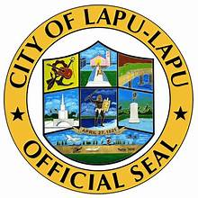

Nestled in the heart of the Philippines, Lapu-Lapu City stands as a testament to the nation's vibrant history and cultural heritage. Named after the revered Datu Lapu-Lapu, a legendary chieftain and warrior, this city on Mactan Island is steeped in tales of bravery, resilience, and triumph.


Discover the Rich History of Lapu-Lapu City
The history of Lapu-Lapu City dates back to the 16th century when it witnessed one of the most significant events in Philippine history—the Battle of Mactan. In 1521, Portuguese explorer Ferdinand Magellan arrived on the shores of Mactan, seeking to spread Christianity and expand the Spanish Empire. However, his expedition faced fierce resistance from the native chieftain, Datu Lapu-Lapu.
The Battle of Mactan, fought on April 27, 1521, saw Datu Lapu-Lapu and his warriors valiantly defending their homeland against foreign invaders. In a display of courage and unity, Lapu-Lapu's forces emerged victorious, thwarting Magellan's expedition and securing their sovereignty.
Today, Lapu-Lapu City stands as a tribute to the heroic spirit of its namesake and the indomitable Filipino spirit. Visitors can explore historical landmarks such as the Mactan Shrine, which commemorates the Battle of Mactan, and pay homage to Datu Lapu-Lapu's legacy.
But Lapu-Lapu City is not just a testament to its past—it's a thriving modern hub, offering visitors a plethora of attractions and experiences. From pristine beaches and vibrant markets to cultural festivals and delicious cuisine, Lapu-Lapu City invites travelers to immerse themselves in its rich tapestry of traditions and adventures.
Whether you're a history enthusiast, a beach lover, or a culinary explorer, Lapu-Lapu City welcomes you with open arms, inviting you to discover its storied past and vibrant present. Join us on a journey through time and culture as we celebrate the essence of Lapu-Lapu City—a place where history comes alive, and every moment is an opportunity for discovery.